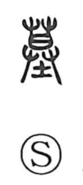

墓

Kun: haka | On: bo
grave ・ tomb
Explanation
A picto-phonetic graph, 墓 combines 土 “earth” with 莫 as the phonetic element marking the sound bo and suggesting the dusk-like gloom appropriate to burial. Yin-period emblems even depict 莫 and 犬 “dog” set within a large 亞, a plan view of an underground grave—the dog indicating the purificatory sacrifice offered to ward off defilement. Graves were not placed in low, damp ground but on dry hills; in early times they were cut deep into the earth, and later the earth was heaped up to form a visible mound.